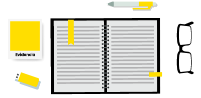
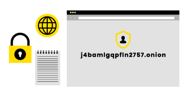

Prepara tu denuncia
Recopila cualquier tipo de evidencia que permita investigar y probar casos de cohecho.
Pueden ser audios, videos, fotografías, textos o declaraciones.
Protégete usando Tor
Denuncia desde un dispositivo personal.
Para proteger tu anonimato debes usar el navegador Tor.
Medida extra: Sistema Operativo Tails
Para añadir extra seguridad al proceso de denuncia, te recomendamos usar Tails, un sistema operativo que no requiere instalación y que puedes ejecutar en la mayoría de los computadores desde una memoria USB o pedrive.
Descargar TailsSube la denuncia desde Tor
Entra al formulario de denuncia desde el navegador Tor.
Completa la información sobre el caso y adjunta documentos de evidencia.
Copia este link y ábrelo en Tor
253m3hbtt3qebhjc.onion
Guarda tu código de seguimiento
Anota en algún lugar seguro el código que se te entregará al enviar tu denuncia.
Es la única forma que tienes de hacer seguimiento a tu caso.
Actúa con discreción
Tu anonimato y tu seguridad deben seguir siendo protegidos después de realizada la denuncia.
Recomendamos no hacer publicaciones sobre tu denuncia en redes sociales, ni comentarla con cercanos, sobre todo si tienen algún vínculo con el caso.